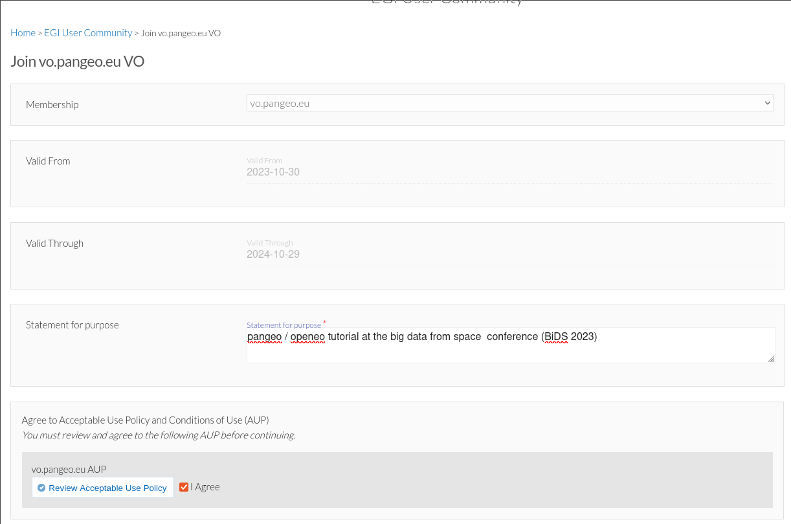
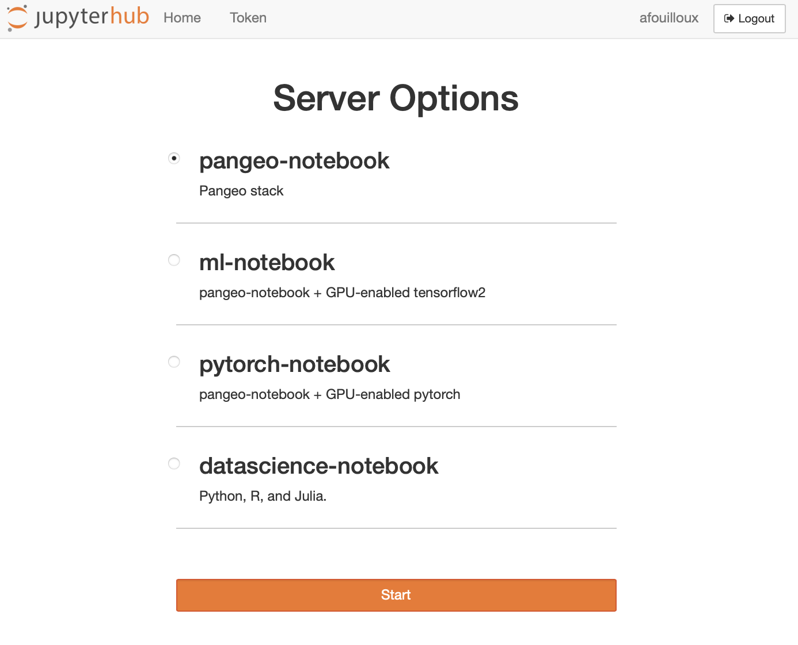
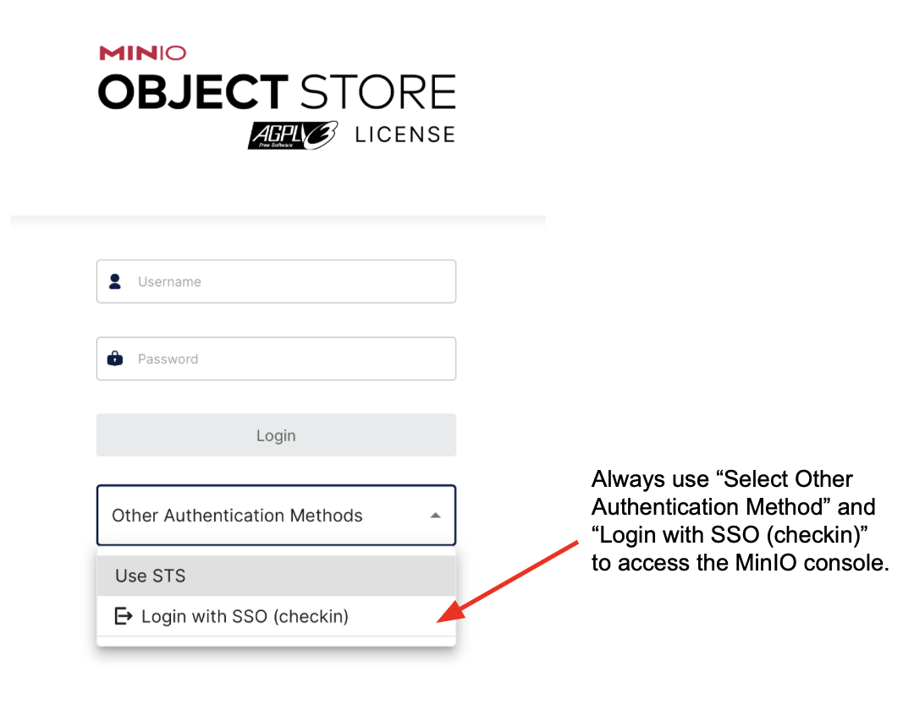

Pangeo@EOSC#
Users: How to get access to pangeo-eosc services?#
In this section you will learn how to register and access pangeo-eosc services.
Registration#
You need to create an EGI Check-in account and enroll to the vo.pangeo.eu Virtual Organisation. There are several steps to follow:
Sign up for an EGI account on the development instance of EGI Check-In, clicking on: https://aai-dev.egi.eu/registry/co_petitions/start/coef:2. Use your ORCID iD account to authenticate.
Enroll in the
vo.pangeo.euVirtual Organisation (VO) by clicking on: https://aai-dev.egi.eu/registry/co_petitions/start/coef:290. Review and click onSubmit. Please add a note in the statement of purpose when requesting to join the VO explaining as “Pangeo / openeo tutorial at the BIDS23” as shown in the example. 
Managers of the Virtual Organisations may take several days to approve your petitions to join and also get back to you via email to verify your identity.
Access DaskHub#
Access DaskHub via https://pangeo-eosc.vm.fedcloud.eu/ and choose among the 4 available flavors (as shown on the figure below):

Pangeo Notebook uses a docker image maintained by the Pangeo community. It contains all the Python packages you need to data analysis and visualization. The list of packages and all the Pangeo Notebook environment is made available here; look up the
pangeo-notebookfolder.Machine Learning Pangeo notebook with GPU enable tensorflow2: similarly, it is maintained by the Pangeo community and the complete computational environment with the list of Python packages is also available at pangeo-data/pangeo-docker-images in the
ml-notebookfolder. This flavor contains all the packages from the Pangeo Notebook flavor and is GPU-enabled tensorflow2. Choose this flavor if you need GPUs; for instance for training neural networks;Machine Learning Pangeo notebook with GPU enable pytorch: it is the same as
ml-notebookbut with GPU-enabled pytorch.Datascience Notebook with Python, R and Julia is maintained by the Jupyter community at jupyter/docker-stacks. Look up the
datascience-notebookfolder. It contains 3 different kernels, namely Python, R and Julia notebooks. Please note that you would probably need to add additional packages as the list of available packages is not exhaustive.
You need to click on Sign in with EGI Check-in and then use your ORCID iD credentials.
A Dask Gateway is available for scaling your computation. For more details on this deployment, you may want to take a look at Daskhub helm chart.
Access MinIO#
Each user has a very small amount of local storage when using the DaskHub as it is not meant to be used for storing large data. Instead a dedicated MinIO Object storage has been setup.
The MinIO console endpoint is: https://pangeo-eosc-minio.vm.fedcloud.eu/. You can authenticate to the MinIO Object Storage in the same way you login to DaskHub. As shown on the Figure below, make sure you “Select Other Authentication Method” and “Login with SSO (checkin)” to access the MinIO console. Then use your ORCID iD to login.

You can create, access and manage your buckets from the minIO console (or use minIO Python package). The figure below shows the GUI (with several tabs on the left; the bucket tab is selected on the figure): initially, you won’t have any buckets so please feel free to create public/privates buckets.

In addition to the MinIO console, the API end point is https://pangeo-eosc-minioapi.vm.fedcloud.eu/ for those who prefer to interact with MinIO via the API.
Please check out this example to get started.
Support#
If you need support, please open an issue.
Monitoring#
Check out the open grafana dashboard. It is particularly useful to check that there are GPUs available before requesting an environment with GPU.
Weekly coffee meetings#
Join the Pangeo community in Europe in a weekly call every Tuesday at 9.30am CET/CEST at: https://meet.jit.si/pangeo-europe
Attend the meeting not only to get to know each other but also to ask questions about how to use the Pangeo ecosystem.
Background information#
Let’s start with a bit of background information! The cloud resources for pangeo-eosc are provided through the collaboration between the Pangeo community, the EGI-ACE project, and the C-SCALE project within the European Open Science Cloud framework.
The European Open Science Cloud (EOSC)#
The European Open Science Cloud (EOSC) aims at becoming the main environment for hosting and processing research data to support European Science.
Pangeo Europe#

Pangeo is a worldwide community for Big Data geoscience promoting open, reproducible, and scalable science.
Pangeo Europe aims at highlighting European contributions to the Pangeo Community and at providing a reference deployment for Pangeo on EOSC. The Pangeo deployment on EOSC has been made possible thanks to CESNET in the context of the the EGI-ACE project and the C-SCALE project.